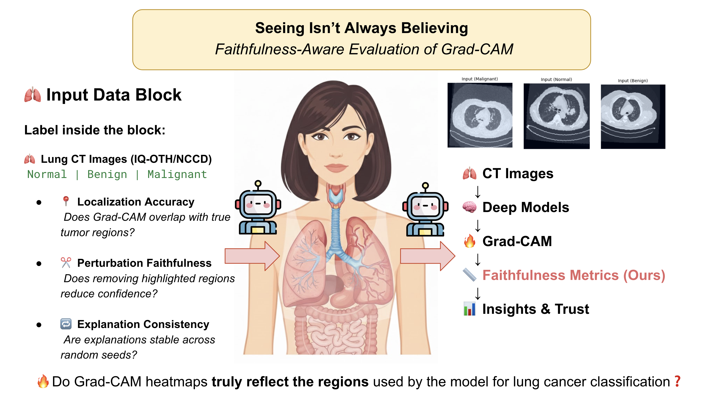
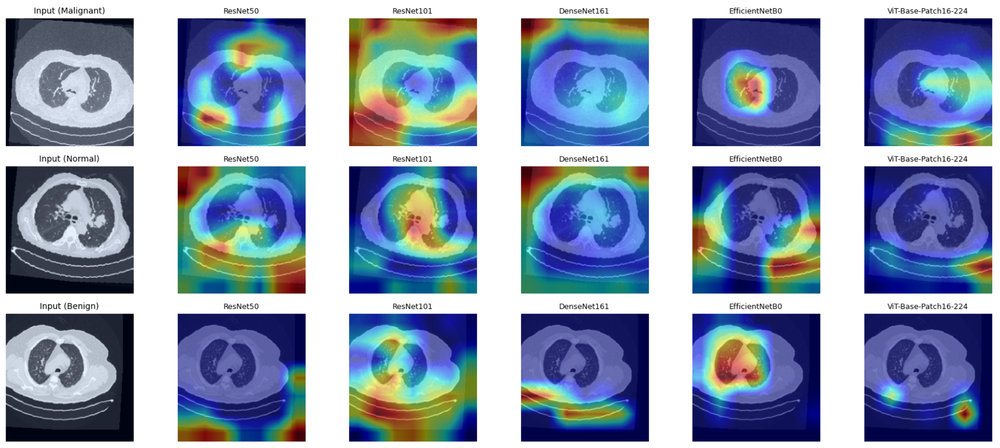

A rigorous, quantitative evaluation of Grad-CAM faithfulness and localization reliability across modern deep learning architectures.

Fig. 1 — Grad-CAM activation maps across CNN and Vision Transformer architectures on lung CT scans.
Grad-CAM has become the de facto explainability tool for medical image analysis. But a critical question remains unanswered.
Do Grad-CAM heatmaps truly reflect the model's reasoning — or are we just seeing convincing illusions?
This paper provides the first rigorous, quantitative evaluation of Grad-CAM faithfulness and localization reliability across modern deep learning architectures for lung cancer CT classification. We demonstrate that high accuracy does not imply trustworthy explanation — and that blind trust in saliency maps can be clinically dangerous.
First framework that quantitatively measures whether Grad-CAM highlights truly drive model decisions in CT lung cancer classification.
Systematic comparison across CNNs (ResNet, DenseNet, EfficientNet) and Vision Transformers — revealing fundamentally different failure modes.
Novel evaluation metrics that go beyond visual inspection — enabling objective comparison of explanation quality.
Evidence of shortcut learning in DenseNet — models that appear to explain correctly while relying on spurious correlations.
Practical guidelines for deploying trustworthy medical AI systems where explainability must meet clinical standards.
Publicly available, ethically approved, expert-annotated by radiologists and oncologists.
| Class | Description | Annotation |
|---|---|---|
| Normal | No abnormal findings in CT scan | Radiologist verified |
| Benign | Non-cancerous pulmonary nodule present | Oncologist annotated |
| Malignant | Cancerous tissue identified | Multi-expert consensus |
From classical convolutional networks to attention-based Vision Transformers.
| Architecture | Type | Parameters | Mechanism |
|---|---|---|---|
| ResNet-50 | CNN | 25.6M | Residual connections |
| ResNet-101 | CNN | 44.5M | Deep residual blocks |
| DenseNet-161 | CNN | 28.7M | Dense skip connections |
| EfficientNet-B0 | CNN | 5.3M | Compound scaling |
| ViT-Base-Patch16-224 | Transformer | 86M | Self-attention over patches |
Three complementary faithfulness metrics that together answer: does the highlighted region actually matter for the prediction?
Measures spatial overlap between Grad-CAM activation maps and ground-truth tumor regions annotated by radiologists.
Quantifies drop in model confidence when highlighted regions are occluded — a faithful map should cause a significant confidence drop.
Evaluates stability of activation patterns across random seeds and model re-initializations to measure explanation robustness.
Interpretability without faithfulness is just another illusion.
Our quantitative evaluation reveals systematic failures in saliency-based explanation across all tested architectures.
CNNs produce coarse or misleading attention. ResNet and EfficientNet frequently highlight background tissue rather than tumor regions, despite achieving high classification accuracy on the test set.
DenseNet shows signs of shortcut learning. Dense skip connections create activation pathways that bypass clinically relevant features, producing saliency maps that appear plausible but fail perturbation tests.
ViT provides precise but sometimes non-faithful localization. Vision Transformers achieve better spatial precision in heatmaps, but attention-to-Grad-CAM translation introduces faithfulness gaps not present in pure attention visualization.
High accuracy does not equal trustworthy explanation. Models achieving >90% accuracy demonstrated some of the lowest faithfulness scores — reinforcing that classification performance is a poor proxy for explanation quality.

Fig. 2 — Grad-CAM activation maps across all evaluated architectures. Note the significant variation in localization precision and faithfulness.
All code, configs, and pretrained checkpoints are available in the repository.
git clone https://github.com/yourusername/GradFaith-CAM.git cd GradFaith-CAM pip install -r requirements.txt
python experiments/train.py --config configs/resnet.yaml
python experiments/evaluate.py --model resnet50
python experiments/visualize.py --image sample.png
If you use this code or findings in your research, please cite:
@inproceedings{panboonyuen2026gradfaithcam, title = {Seeing Isn't Always Believing: Analysis of Grad-CAM Faithfulness and Localization Reliability in Lung Cancer CT Classification}, author = {Panboonyuen, Teerapong}, booktitle = {Proceedings of the 18th International Conference on Knowledge and Smart Technology (KST)}, year = {2026} }
This research was conducted at Chulalongkorn University and MARSAIL (Motor AI Recognition Solution Artificial Intelligence Laboratory).